HerVenture Webpage Design - February 2019
The GitHub repository for this project, including the website and app code, can be found here, and the submission on Devpost can be found here.
Check out HerVenture for yourself! (links to external site)
What is HerVenture?
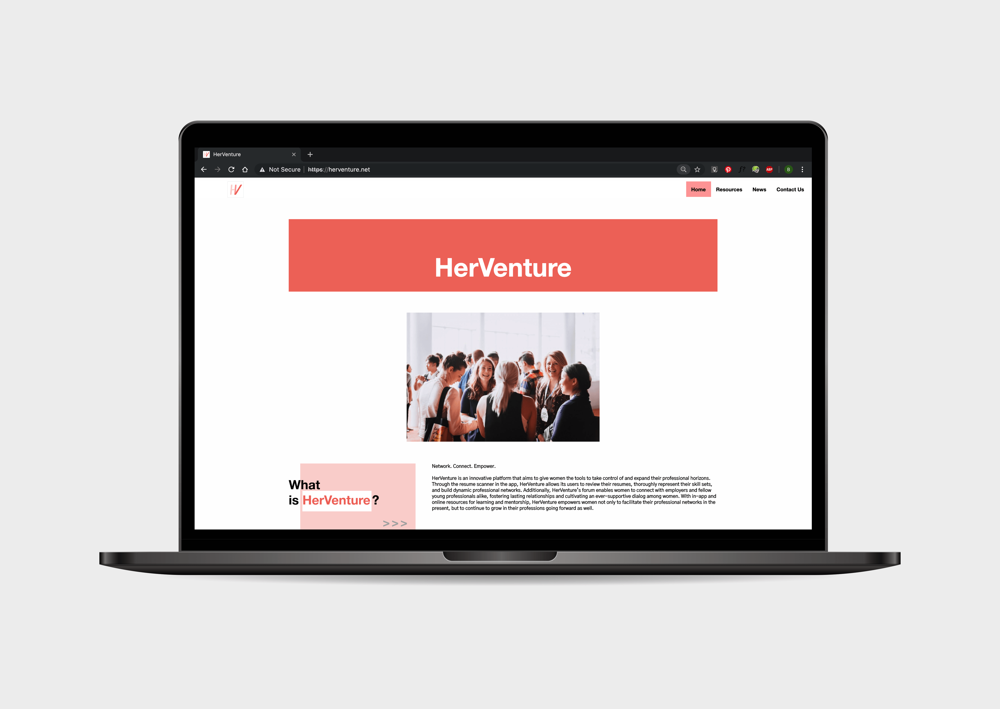
HerVenture was born at Pearl Hacks in February 2019 after my hackathon partner, Sanjana Jampana, and I attended an insightful and thought-provoking event for Google's #IamRemarkable initiative. During the workshop, we learned that women (and other marginalized minority groups) are far less likely to self-promote themselves and their achievements, despite the fact that they are often just as qualified—or even “overqualified”—for certain positions as men. #IamRemarkable aims to open people’s eyes about this issue, changing the perception of self-promotion when done by women and underrepresented groups and encouraging said groups to improve their self-promotion skills.
Sanjana and I weren’t aware of it before attending the workshop, but at its resolution, we realized that we, too, were prone to shying away from speaking about our achievements due to modesty norms, even though our accomplishments were certainly worthy of being shared. We decided that, for our hackathon project, we also wanted to create something that would encourage self-promotion, help women navigate the professional world, and overcome the hurdles they face in the workplace.
We knew from the start that we wanted to create a mobile application and a website to accompany it so that we could both exercise development skills that we'd never used before, and being that we were working in a team of 2, we decided to delegate our workloads based on platform—I would code the website, and Sanjana would build an Android application.
HerVenture marks my first ever attempt at using HTML/CSS/JavaScript to build a website from scratch (with no pre-existing code), and with our 24-hour time constraint, completing the pages and hosting the site before the submission deadline proved to be a stressful—but ultimately rewarding—task. The design decisions of HerVenture, from conception to deployment, are outlined below.
Description
HerVenture is composed of two platforms—a mobile app with tools for improving the user’s professional network and a website where the user can learn about new resources and opportunities—both with the single goal of empowering women not only to facilitate their professional networks in the present, but to continue to grow in their professions going forward as well.
The HerVenture app features include: a professional calendar where women can keep track of deadlines, interview dates, etc.; a resume scanner; a forum where women can connect and network with other female professionals or chat about career planning with a chatbot trained with IBM Watson; a page with job recommendations based on information from the user’s resume (obtained through the resume scanner); and a resources tab that would link to the HerVenture website.
While the Android app focused on profession-building tools that could be used presently, I wanted the website to be a hub for information, exposing its users to opportunities, which would help them plan and grow their professions in the future. In order to figure out the specifics of what to include in the website, however, I needed to isolate a target audience—only then would I be able to tailor the site information to them.
Defining the user
Sanjana and I were, at the time of Pearl Hacks, first-year college students studying a discipline that is predominately male: computer science. We were certainly used to feeling as though we needed to play down our achievements, and we weren’t as used to seeing the success stories of other women in our field. We had also both just begun our second semester of college, so while we were becoming adjusted to our new academic environment, we had no idea how to navigate the new professional environment into which we were thrust. Since we were painfully aware of the struggles of new women professionals in STEM fields, having experienced them ourselves, we decided to make them our user so we could target the issues they face. We hoped that HerVenture would give its users what we thought was missing from our lives: a platform on which they could network, connecting them with people and opportunities alike, thus empowering them to take the reins on their professions. This dynamic relationship became HerVenture’s motto: “Network. Connect. Empower.”
With the user defined as a young (college-aged or newly graduated; yet to enter the professional work environment) woman in a STEM field, I moved on to determining the best features to include on the site to cater to the user's needs.
Planning the site
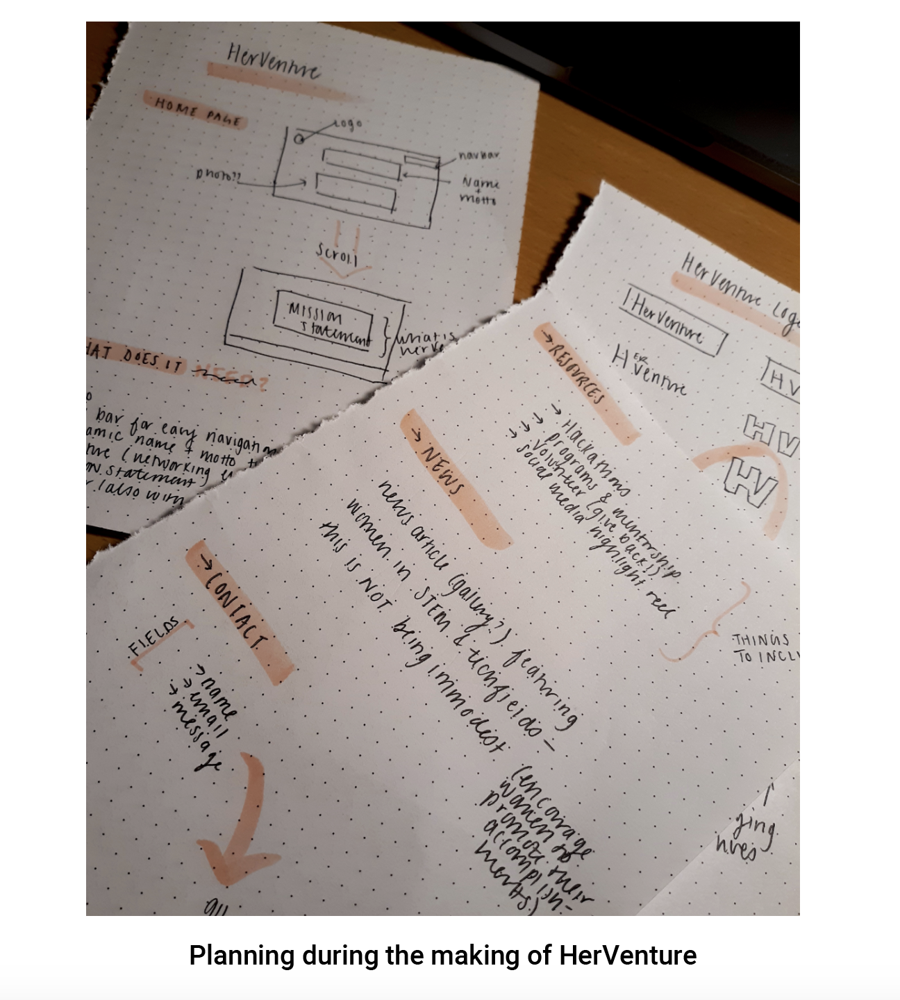
Aside from a home page explaining HerVenture’s purpose, I wanted the website to have a ‘Resources’ tab which would aggregate opportunities that would allow for growth within the user’s field, like hackathons, mentorship programs, and volunteering/teaching opportunities for women to reach other women. Hackathons have been imperative to helping me exercise current technical skills and learn new ones, but some that I had attended fostered decidedly hostile and condescending environments, which were extremely unwelcoming toward amateur hackers and to women in general. Thus, I found and linked hackathons for women and non-binary hackers, Pearl Hacks included, since I found that its inclusive environment faciliated much more exploration and learning for me and would most likely do the same for HerVenture's users. I also sourced and linked mentorship organizations, which provide invaluable support and career development services, fitting the needs of our user perfectly. Finally, the inclusion of a volunteer section would allow HerVenture's users to give back, allowinf for the continuation of the cycle of empowerment.
I also chose to incorporate a ‘News’ page in the website, which would feature recent articles that focused on successful women in tech/STEM fields. By presenting users with a collection of real-life stories, all of which featured the accomplishments of women, HerVenture aims to encourage women to promote their own achievements. I hoped that showing numerous of these articles would help to normalize the act of self-promotion, demolishing the stigma that doing so is self-indulgent and immodest and encouraging the users of HerVenture to do the same in their own professional lives.
Finally, I chose to include a ‘Contact’ section in the HerVenture website. Doing so would allow users to contribute to the website’s content, adding resources and opportunities that we might’ve missed. Additionally, in HerVenture’s future, I hoped that users would contribute their own success stories, helping to foster their individual self-promotion skills while also sharing their journeys with other users.
Planning the visual elements
I chose various shades of pink and grey for the color scheme of HerVenture, which would be implemented across the app and the website for a seamless and continuous user experience. Pink is a warm color, contributing to an inviting feel, which is especially important considering the inexperience and uncertainty of the user we had in mind. Additionally, there is a certain stigma associated with the color pink: those who enjoy or wear it are often considered “girly” and, from both Sanjana's and my experience, they are not taken seriously. The usage of this color in a professional platform was a deliberate choice, taking back the color pink and re-establishing its associations to those of empowerment, professionalism, and success instead of restricting stereotypes. This is representative of HerVenture’s mission to de-stigmatize female self-promotion; women tend to steer clear of self-promoting their accomplishments to the fullest, because doing so is traditionally viewed as lacking humility and akin to bragging.
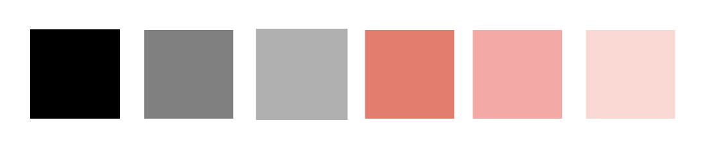
The typeface used throughout the headers and title text of the website is Helvetica Neue, a commanding type that is noticeable (especially when used in the bold weight, which is the weight I chose for the website) but simple and readable. The body text is Gothic A1, another sans-serif typeface that conveys the modern and progressive tone that Sanjana and I felt HerVenture needed to have. Once again, I chose a sans-serif typeface for its contemporary feel, its simplicity, and its easy readability in a web format. I steered clear of serif typefaces, not only because they give off a traditional and old-fashioned feel (the opposite of HerVenture’s mission), but also because they are better suited for readability in print formats, and HerVenture is an entirely digital project.
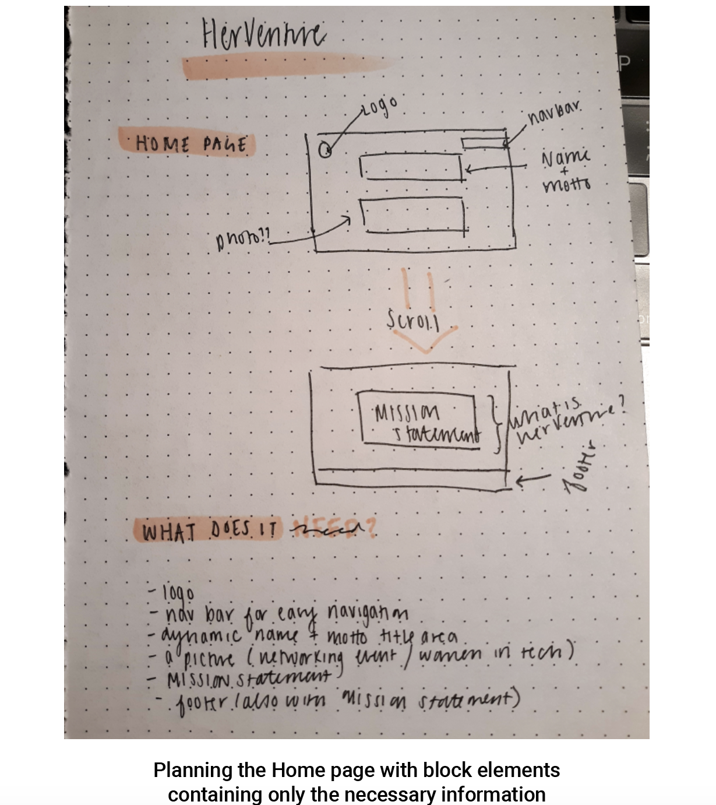
I knew immediately that the website’s user interface should be as clean and simple as possible. The audience for our project is new professionals trying to navigate the new and unfamiliar territory of the professional world, so the website needed to be straightforward with as little room for ambiguity as possible. The last thing I wanted was for the website to create more confusion for its users, who are already probably unsure of how to proceed in their professional fields. Making the interface too cluttered and elaborate at first glance would likely deter people from continuing to use the site. I decided on a plain white background for all the pages and block-shaped elements, which would be easy to read and to locate, containing only the essential features of the site.
The top left corner of each page would contain the HerVenture logo (I’ll elaborate on how I created this later on), and at the top right of each page would be a toolbar for navigating between the Home, Resources, News, and Contact pages. I planned to denote the current/active page by having it appear over a colored background in the navigation bar. To create affordances for the possible actions of the toolbar, the pages to which the user would be able to navigate would be indicated in a different colored block upon hovering over them, as shown below in the final product of the website.
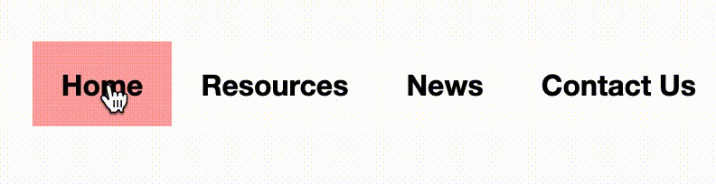
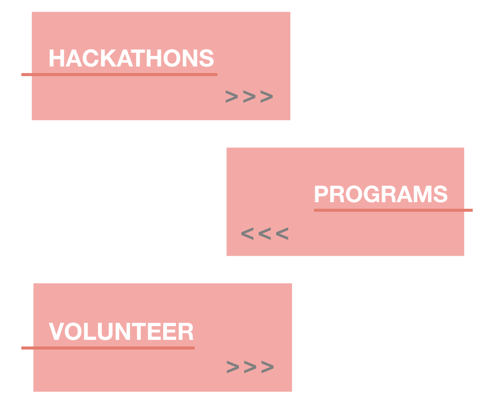
I also knew that the title of each page should stand out, and I decided to achieve this by imposing it in white text over a colored background. Likewise, I created graphics for the headers of each section in the website so that they would draw more attention, and the user could swiftly and easily discern the purpose of the section. These were made with Adobe Illustrator, and they emphasized a key word for that encapsulated the page of the website on which they were placed for maximum clarity: “HerVenture” on the home page, “happening” on the news page, and “suggestion” on the contact page. On the resources page, I created a separate header for each section of resources: hackathons, programs, and volunteer opportunities, shown to the right. I alternated the side of the webpage on which each header would be placed to create some visual variety and to make it abundantly clear where each section began and ended. Since there are multiple sections of information, the visual contrast between sections makes it easy for the user to navigate the page and to find her desired section as quickly as possible.
In each header graphic, the triple angle brackets are function as a guide, shifting the user’s attention from the header to the text beside it. However, they also resemble the angle brackets on a command line; this was done so that the visual elements of the website reflected the user, someone in a science/technology field, creating a relevant visual theme across the site.
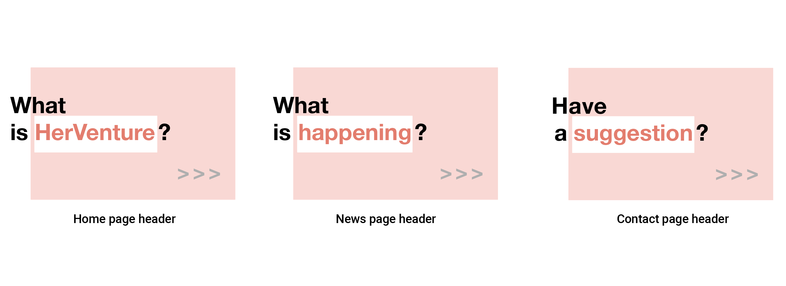
Next, I focused my attention on creating the title block for each page on the site. I decided on overlaying white text over the darkest pink shade in the color scheme I’d chosen, since using the darkest color would best indicate that the block was the subject of the page. Each block was centered in the middle of the webpage with equal margins on each side. I began creating the title block for the home page, but I felt that including HerVenture’s name and motto—”Network. Connect. Empower”—was too verbose for the title of the page. Since HerVenture’s motto is based off of the dynamic relationship of networking and connecting, which yields empowerment, what better way would there be to illustrate this constant movement and momentum than to create an animated effect, where each word looked like it was being typed out? For this, I created two functions, one for displaying/typing out the text and one for clearing it, using JavaScript. The final animation is shown below.
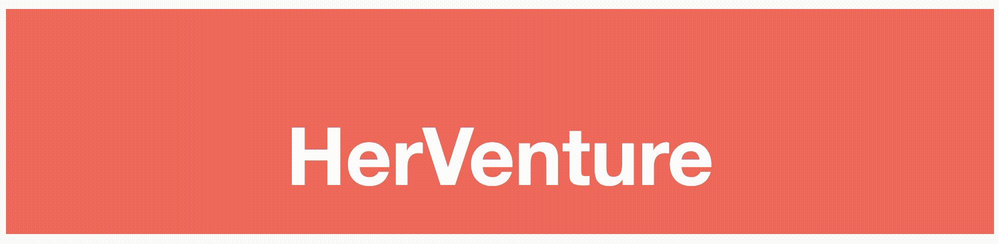
Wanting to continue this theme of movement on the other pages, I used the same ‘typing out’ effect on the remaining pages of the website: Resources, News, and Contact Us.

Having arrived at a cohesive list of what would be included, content-wise, on the website, I turned to creating a logo that would compile all that HerVenture represented into a single icon. I sketched many variations of a logo encompassing an ‘H’ and a ‘V,’ the letters that are capitalized in HerVenture’s name. While doing so, I realized that, even when the ‘H’ and the ‘V’ were next to each other, they still seemed like disparate elements. I arrived at the final iteration of the HerVenture logo, which is a fusion of the two letters, because I wanted it to be a symbol of how HerVenture combines a mobile application with a website, fusing two platforms into a single product.
Putting it all together
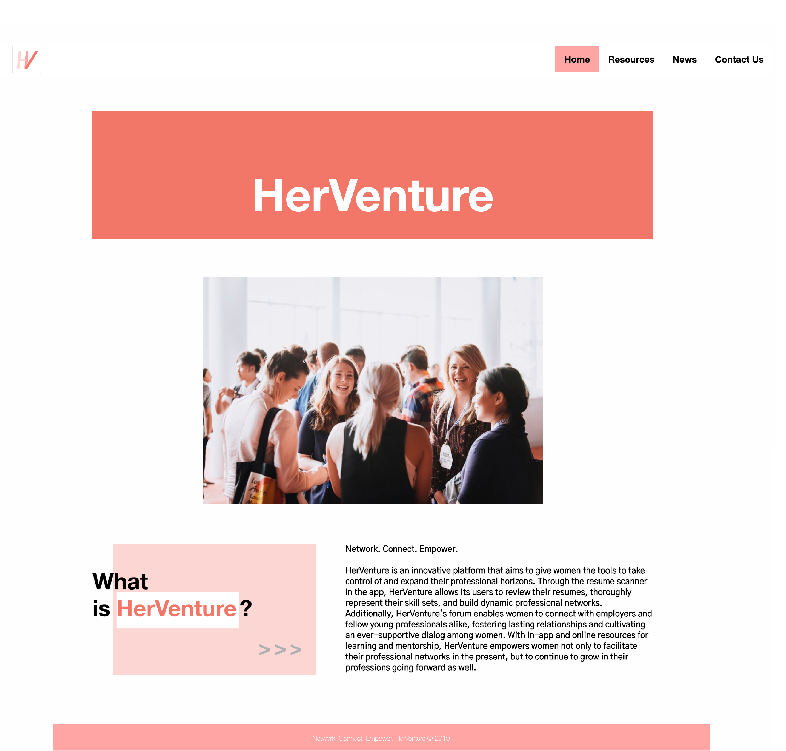
HerVenture’s home page, which can be found at https://herventure.net, consists of the logo and navigation bar, both of which are found on each page of the website. Below them is the title block, which displays HerVenture’s name and motto in a fluid, kinetic animation. Under the title is an image of women at a networking event, illustrating HerVenture’s goals for its users: building professional networks. Beneath that is HerVenture’s mission statement:
“Network. Connect. Empower. HerVenture is an innovative platform that aims to give women the tools to take control of and expand their professional horizons. Through the resume scanner in the app, HerVenture allows its users to review their resumes, thoroughly represent their skill sets, and build dynamic professional networks. Additionally, HerVenture’s forum enables women to connect with employers and fellow young professionals alike, fostering lasting relationships and cultivating an ever-supportive dialog among women. With in-app and online resources for learning and mentorship, HerVenture empowers women not only to facilitate their professional networks in the present, but to continue to grow in their professions going forward as well.”
I wrote this statement to capture Sanjana’s and my goals for the project. Including the statement on the home page serves to give users, especially new ones, an idea of what the project and the website are about. Finally, fixed at the bottom of the page is a footer—constant across all pages of the site—containing HerVenture’s motto and year of creation. In addition to serving as a cohesive conclusion to each page of the HerVenture website, the footer also creates a visual stopping point so that users can tell they have reached the end of the page.
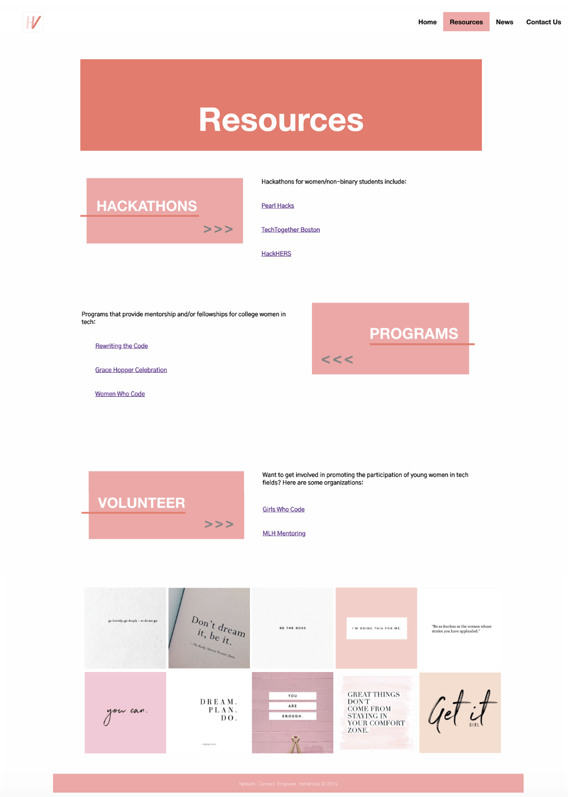Upon navigating to the Resources tab, HerVenture’s site uses will see the page’s title, followed by three sections of links to hackathons, programs, and volunteer opportunities. At the bottom of the page, just below the footer, there is a gallery of images; I planned to add a social media highlight reel of the latest posts from HerVenture’s social media accounts (I definitely saw an active social media presence in the future for the organization, since its users are so young and present online), because social media can be an invaluable and informative place for discovering professional events and resources. While I wasn’t able to accomplish this during the span of the hackathon, it is definitely something I would like to add when revisiting the project.
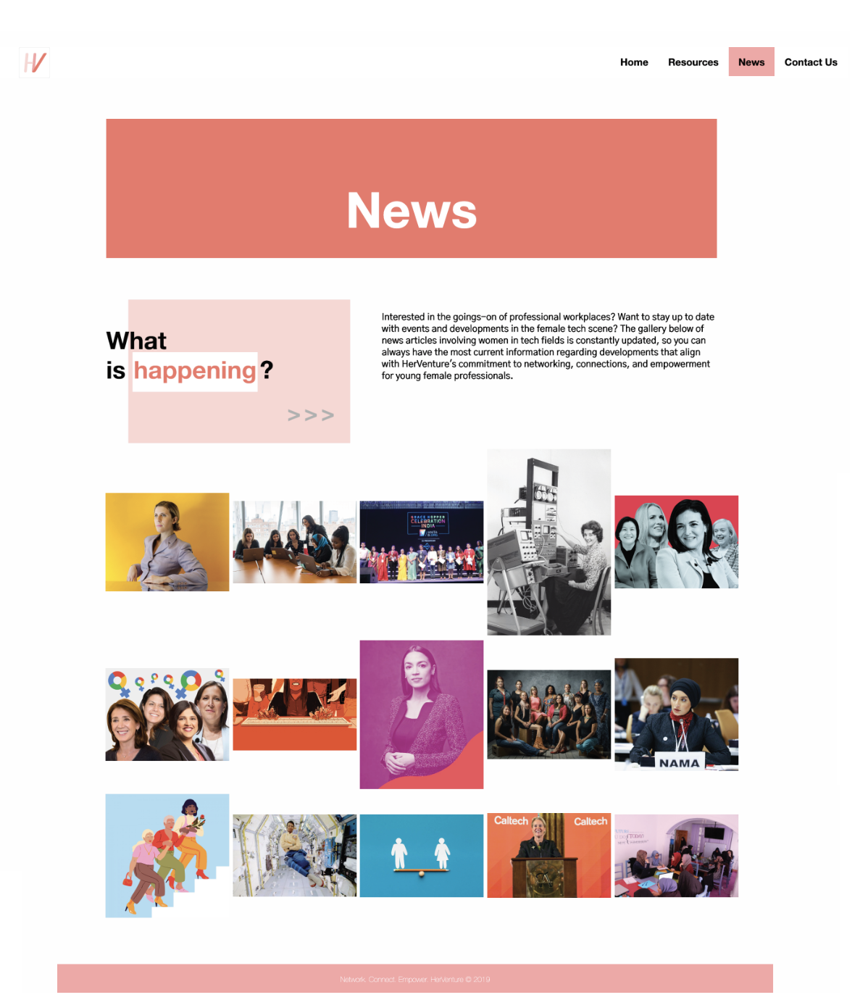
The News tab features a short blurb, which describes the purpose of the news article image gallery below it: “Interested in the goings-on of professional workplaces? Want to stay up to date with events and developments in the female tech scene? The gallery below of news articles involving women in tech fields is constantly updated, so you can always have the most current information regarding developments that align with HerVenture's commitment to networking, connections, and empowerment for young female professionals.”

The final tab in the navigation bar directs users to a page where they can leave a message. It is forwarded by a witty and lighthearted introduction—“Do you yearn to know the answer to life, the universe, and everything? Or just want to say hi? Fill out the form below to send us a message, and we'll get back to you as soon as possible!”—which is meant to encourage even the most hesitant of users to reach out. As the site’s creator, I would love to receive feedback or any additional information that could be added to the website to help all of its users. After submitting the form, users are redirected to a page thanking them for their input. This page contains only the same elements that are constant throughout the website—logo, footer, and most importantly, navigation bar—so that users can quickly navigate back to the other pages of the website.
Final thoughts
With only 24 hours to create this project from the bottom up, my partner and I faced time limitations that forced us—myself especially, since I was in charge of overall UI—to make deliberate design decisions. Due to this, and also because I was relatively new to the framework I was using and the nature of HerVenture’s intended user, I opted for a minimal design that contained only the most important information and made it easily accessible.
Creating the entire website and hosting it using FTP (which was quite the task in itself!) was a learning process, but when it came time to demo our hackathon project, the struggle was all worth it. All the judges with whom we spoke agreed that there was definitely a lack of career-building tools for young female professionals, and we were immensely proud of building a project that strove to educate, encourage, and empower them.
Note: the laptop webpage mockup was created with this template.